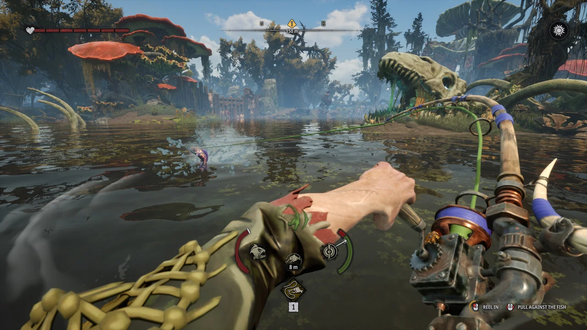

EARLY ACCESS · CHECKED 12 NOVEMBER 2026
Find and catch Bloodgill for Father Matthias
Install the current Early Access update, select Father Matthias's fishing objective and follow the Bloodgill marker added in Update #2. Check that the fishing school names Bloodgill, equip Rainbow Fin and keep the fish intact for delivery. If the marker remains unclear, the publisher has linked a community map with a fish finder.

Find the school before spending bait
- Let Steam finish installing the latest update, then restart the game. Update #2 added Bloodgill fishing spots and a quest marker for Father Matthias.
- Check your active objective and its requested quantity. Keep the caught fish available until the delivery objective completes.
- Follow the marker and read the school's species panel before casting. Nearby predator schools may contain Harpooner.
- If the marker is absent or unclear, use the community map's Finder and select Bloodgill. Its layers start hidden, so choose the relevant layer or fish filter first.
The publisher recommended Morakie's community map in the Steam discussion about missing Bloodgill. The thread also contains differing player reports about when the marker appeared. A marker problem alone does not establish a night-only requirement.
Player reports and the publisher's map recommendation on Steam · Open Morakie's external fan map. These links leave this website in the same tab.
Use a predator lure and preserve the catch
Rainbow Fin is the straightforward lure to bring. The Early Access fishing accounts linked below identify Bloodgill as a predator and describe moving the lure through its named school to attract a bite. After the hook, watch fish stamina and line tension.
Destructoid lists Rainbow Fin's recipe as one Fish Meat, one Metal Plate and one Chromatic Scales. It also lists Flaming Belly as an alternative, using Fish Meat, Jaws, Metal Plate and Swamp Lily. Check your unlocked recipe before setting out.
Reserve the requested whole fish for Father Matthias before selling or grinding surplus. Follow your current quest counter for the required number. Published guides disagree about that number.
Destructoid's Early Access location and bait account · Tpose Gaming's fishing account.
Choose the next check from the symptom
| What you see | Next check |
|---|---|
| No fish marker | Confirm the fish objective and current update, then compare the community Finder. Update #2 added markers, but players reported different behavior. |
| Only Harpooner catches | Recheck the school's species panel before using another lure. |
| Fish caught, delivery still pending | Read the active counter and retain whole catches. Processing or selling removes the fish you intended to deliver. |
| Later ritual blocked after losing ghoul parts | Install Update #3. Its Hymn to Deformity fix says the quest now completes automatically when a required ghoul body part is lost. This applies to the later ritual step. |
Older directions send players south of The Slough Trading Post. Start with your updated quest marker because Update #2 changed the available spots. If the ritual still stalls on the current version, report the active objective and missing item to Steam Discussions.
Related DREADMOOR guides
Prepared from linked developer information and attributed player reports. Gameplay steps have not been personally tested. Early Access behavior may change after this check.